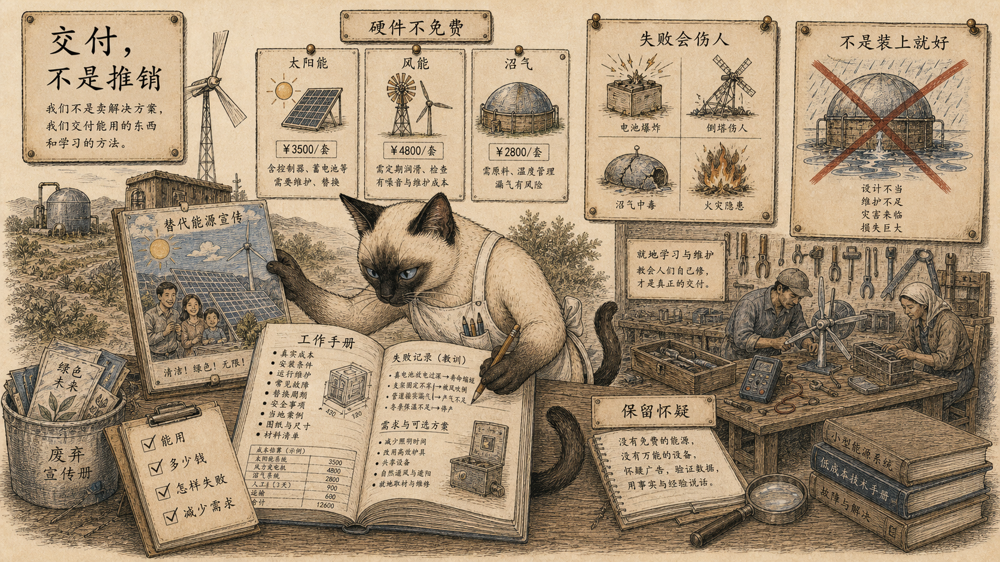
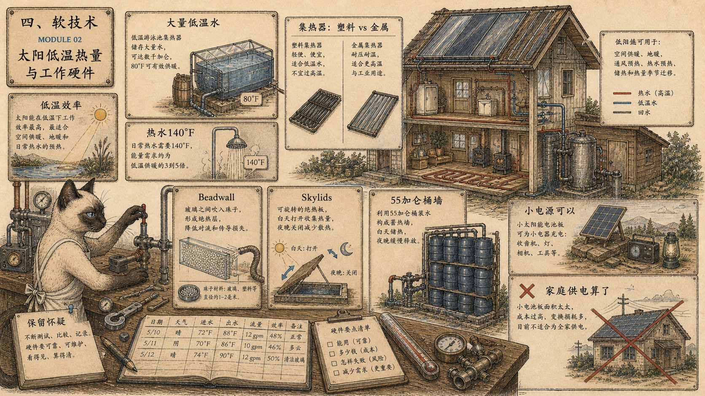
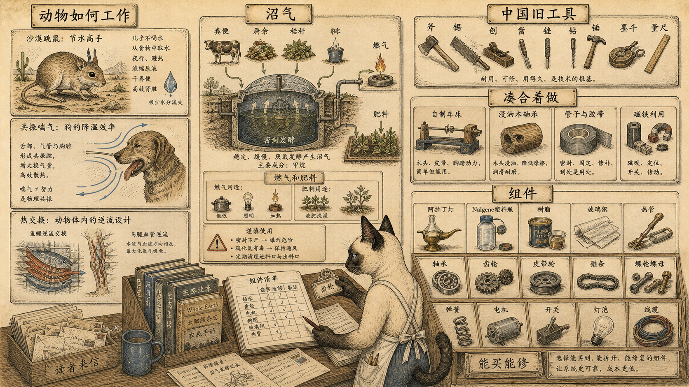

模块 01
交付，而不是推销
替代能源不自动等于好工具。硬件是否可靠，比立场更重要。
先看图：猫把宣传海报推到一边，打开的是工作手册：什么能用、花多少钱、怎样失败、怎样减少需求。软技术先要过这一关。
有趣的是：鲍德温说，没有想清楚、做仔细的装置，会变成另一个“漏水圆顶”，用反复失败挫伤善意的人。风电不只是玩具，沼气设备也少得惊人。
为什么重要：软技术不是纯洁意识形态。它必须能被理解、购买、安装、维修、复制和批评。
软技术听起来温柔，但鲍德温在这里不断降温：太阳、风和沼气也许免费，捕获和储存它们的硬件并不免费。真正需要的不是推销，而是交付。
所以这册按“能不能工作”来读：成本、维护、失败方式、天气、材料、研究网络、组件和实际使用反馈，比漂亮口号更重要。
《全球概览》 并不反对替代技术，它反对把愿望当技术。能工作的软技术必须说清成本、失败、维护和减少需求。

替代能源不自动等于好工具。硬件是否可靠，比立场更重要。
先看图：猫把宣传海报推到一边，打开的是工作手册：什么能用、花多少钱、怎样失败、怎样减少需求。软技术先要过这一关。
有趣的是：鲍德温说，没有想清楚、做仔细的装置，会变成另一个“漏水圆顶”，用反复失败挫伤善意的人。风电不只是玩具，沼气设备也少得惊人。
为什么重要：软技术不是纯洁意识形态。它必须能被理解、购买、安装、维修、复制和批评。

太阳能不是越热越好。低温、流量、储热和保温细节，决定系统是否真的有用。
先看图：泳池集热器、家用热水、珠帘保温墙、天窗盖、55 加仑桶墙和小型太阳电池被放在同一张硬件台上。它们不是同一个问题。
有趣的是：低温集热器效率高，泳池几千加仑水升到约 80°F，反而可以用塑料；家用热水要到 140°F，才需要更昂贵的金属、黑涂层和玻璃。
为什么重要：太阳能电力被处理得很谨慎：给野外无线电或小计算器充电可以，给整个家庭或车辆供电，基本可以先忘掉。
佐姆工坊、衔尾蛇项目、新炼金术研究所和综合生命系统实验室都不是概念图，它们在屋顶、温室、鱼池、山地雪和无备用能源中测试软技术。

你从这些团体买到的不只是产品，而是研究网络和可被检验的原型。
先看图：佐姆工坊的天窗盖、衔尾蛇旧房改造、新炼金术研究所的“方舟”、综合生命系统实验室的山地实验室连成一张网络。每个节点都在真实气候和真实负荷下工作。
有趣的是：衔尾蛇东部项目用南向屋顶和南墙集热器，加地下室 2,000 加仑钢水箱储热；新炼金术研究所的 13,500 加仑鱼池既是生产系统，也是储热和气候调节组件。
为什么重要：软技术在这里不是买一个机器，而是加入不断试错、公布结果、修正设计的研究共同体。

荒野木屋屋顶上小风机呼呼转的梦很诱人，也很难。
先看图：风机不是只有叶片。塔架、电池、控制器、维护、冰、尘、腐蚀、冰雹、昆虫、雷击、金属疲劳和极端风力都在图里。
有趣的是：《全球概览》 知道至少一例昂贵进口设备在山地风暴中整个被吹走。自制机器常常输出低、故障多，商业机器也贵。
为什么重要：风能需要气候数据、空气动力学、机械、电池、塔架和长期维护。把成本分摊给共同体，也许比单户硬扛更现实。
软技术不是一台完美机器，而是一套学习网络和零件生态：草根通讯、读者反馈、旧工具、动物生理、胶带、磁铁、灯、树脂、小机械和“凑合着做”。

读者反馈会让标准变严，但大机构也会把太阳和风重新包装成可销售系统。
先看图：一边是草根通讯、项目档案、求职者技能和读者反馈；另一边是美国航天局、石油公司、燃气研究机构和广告机器。
有趣的是：《替代能源》随着读者和编辑互相教育，幻想减少，方案质量提高。《正在制作》则把合作项目和求职者档案连起来。
为什么重要：低技术运动并不会自动免于权力吸收。了解大机构正在做什么，至少知道表面，是必要的。

软技术最终落在能买、能改、能修、能拿来试验的小东西上。
先看图：袋鼠鼠、狗喘气、热交换、沼气、旧中国工具、油浸木轴承、强力胶带、磁铁、灯、塑料器材、树脂、玻璃纤维和热管都被放进组件抽屉。
有趣的是：狗喘气可能接近呼吸系统的共振频率，这样散热时耗费最少肌肉能量。动物在这里成了干旱气候建筑和设计的教材。
为什么重要：《工作中的中国》和《凑合着做》提醒人：真正精炼的工具往往不浪费材料，尤其不浪费金属。软技术的能力，常常藏在旧工具和小组件里。